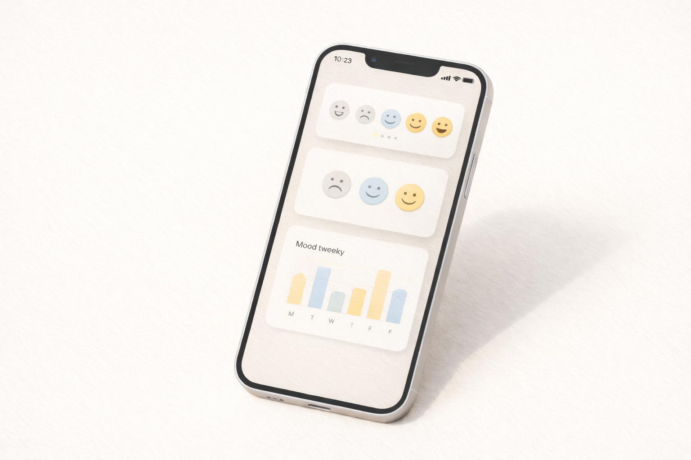

简历
返回首页
本页内容来自 `docs/简历+作品集/设计师-林佑/简历-林佑`，为静态展示版。你可以在浏览器按
⌘P 直接打印/导出 PDF（建议开启“背景图形”）。
个人简介
拥有 3 年经验的产品设计师，热衷于构建清晰的 B 端逻辑 与精致的 C 端体验。擅长在复杂业务需求中梳理信息架构，通过 Atomic Design 提升协作效率，并用数据验证设计决策。
工作经历
只保留“你做了什么 + 产生了什么结果 + 你是如何做到的”。
2023.08 – 至今
星云数科（Nebula Fintech）
产品设计师 · 上海 · 智能投顾与资产管理
- 核心业务重构：主导「星云理财 App 4.0」资产总览模块重构：重定义信息层级 + 引入数据可视化组件，解决“看不懂收益”痛点； 上线后用户人均资产查询时长缩短 40%，CSAT 提升 15%。
- 设计系统搭建：从 0 到 1 搭建 “Nebula UI” 设计系统，定义色彩/字体/间距全局样式，输出 50+ 高复用组件（Figma Variants）； 研发还原度 85% → 98%，交付效率提升 20%。
- 增长设计：优化新用户开户流程（KYC），利用 Doherty Threshold 优化加载动效与反馈机制；注册转化率提升 8.5%。
2021.07 – 2023.07
像素引力设计事务所（Pixel Gravity Studio）
UI / Web 设计师 · 杭州 · 数字创意代理商
- 品牌数字化体验：负责咖啡品牌 “Mellow Cup” 官网改版及微信小程序界面设计，确立“极简 + 有加粗”的视觉风格，强化品牌识别度； 获 Awwwards “Site of the Day” 提名。
- 响应式网页设计：为 10+ 客户提供 Desktop → Mobile 全端适配方案，确保视觉一致性与可访问性。
教育背景
中国美术学院（CAA） · 视觉传达设计系 · 学士（2018.09 – 2022.06）
GPA
Top 5%
3.8 / 4.0
专业前 5%。强调系统化表达、信息结构与视觉叙事。
Awards
Graduation
优秀毕业生
毕业设计《数字遗迹》获金点设计奖（Golden Pin）学生组入围。
技能与工具
可交付、可协作、可复用。
Core
Figma
Auto Layout、Variants、Interactive Components、Variables 模式。
Prototype
ProtoPie
高保真微交互动效，模拟真实原生体验。
Adobe
PS / AI / AE
图像处理、矢量插画、基础动效 demo。
侧面项目
独立设计 + 协作上架的真实产品经验。

下载/打印
建议用浏览器打印为 PDF：⌘P → 保存为 PDF。